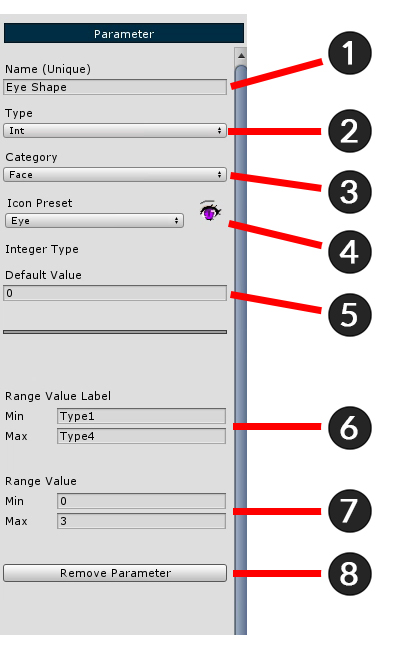
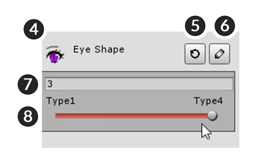

AnyPortrait > 시작하기 > 1.5. 컨트롤 파라미터 추가하기
1.5. 컨트롤 파라미터 추가하기
1.0.0
메시 그룹(Mesh Group)의 모디파이어를 제어하는 방법은 두가지가 있습니다.
하나는 컨트롤 파라미터(Control Parameter)를 이용하는 방법이 있고, 다른 하나는 애니메이션의 키프레임(Keyframe)을 이용한 방법입니다. (애니메이션에서 컨트롤 파라미터를 제어할 수도 있습니다.)
여기서는 컨트롤 파라미터를 추가하는 내용을 배우며, 이것은 다음에 이어지는 모디파이어(Modifier)에서 활용될 것입니다.

(1) Add Control Parameter를 눌러서 파라미터를 생성합니다.
생성된 파라미터를 선택한 뒤, (2) 파라미터의 이름을 지정합니다.
여기서는 "눈 모양(Eye Shape)", "입 모양(Mouth Shape)", "위치 값(Vertical Position)"의 3개의 파라미터를 만듭니다.

컨트롤 파라미터의 설정 화면 구성은 왼쪽과 같습니다.
"입력 타입과 범위"를 설정해야 합니다.
1. Name : 파라미터의 이름을 설정합니다. 스크립트로 제어할 수 있는 ID로 활용되기 때문에 고유한 값을 넣어야 합니다.
2. Type : 입력 타입을 설정합니다. 정수형(Int), 실수형(Float), 2차원 벡터(Vector2) 중 하나를 결정할 수 있습니다.
3. Category : UI에서 필터로 파라미터를 정리할 수 있습니다. 이때 사용되는 값입니다.
4. Icon Preset : UI에서 파라미터를 표시하는 아이콘을 설정합니다.
5. Default Value : 기본값을 지정합니다.
6. Range Value Label : UI에 표시되는 Min, Max에 해당하는 이름입니다.
7. Range Value : 입력 범위값입니다.
8. Presets : 미리 만들어진 파라미터 프리셋을 사용하거나, 새로 프리셋으로 저장합니다.
9. Remove Control Parameter : 파라미터를 삭제합니다.
위 이미지에 나온 것처럼 눈 모양(Eye Shape) 파라미터에 값을 넣어줍니다.
- 눈 모양은 이미지가 4개 입니다. Type으로 정수형(Int)을 설정, Range Value엔 4개의 값이 들어가도록 0과 3을 넣어줍니다.


작성된 컨트롤 파라미터는 좌측 UI의 Controller 탭에서 확인할 수 있습니다.
Controller 탭을 누르면 방금 작성된 눈 모양(Eye Shape) 파라미터가 등록되어 있습니다.
Controller 화면 내의 구성은 다음과 같습니다.
1. Category : 컨트롤 파라미터가 너무 많은 경우, 필요한 파라미터만 보이도록 필터를 지정할 수 있습니다.
2. Set Default All : 모든 파라미터의 현재 값을 기본값으로 되돌립니다. (설정이 초기화되는 것은 아닙니다.)
3. 컨트롤 파라미터 : 등록된 컨트롤 파라미터의 영역입니다.
4. 아이콘과 이름 : 위 설정에서 Name, Icon Preset에서 지정한 이름과 아이콘이 나옵니다.
5. Set Default : 파라미터의 현재 값을 기본값으로 되돌립니다. 위 설정에서 Default Value에 해당하는 값으로 바뀝니다.
6. Edit : 어느 화면에 있더라도 바로 컨트롤 파라미터의 설정 화면으로 이동하여 수정할 수 있도록 합니다.
7. 현재 값 : 컨트롤 파라미터의 현재 값입니다.
8. 슬라이더 : 마우스로 제어할 수 있는 슬라이더입니다. 2차원 벡터(Vector2) 타입인 경우 슬라이더가 아닌 격자가 나타납니다.
이제 입 모양(Mouth Shape)과 위치 값(Vertical Position)의 컨트롤 파라미터도 만들어봅시다.

위 화면처럼 각각의 파라미터 2종을 설정합니다.
위치 값(Vertical Position)의 타입을 실수형(Float)으로 지정하게되면, 설정 하단에 (1) Snap Size가 나타나게 됩니다.
Snap Size는 Min~Max의 값을 몇등분할지 결정하는 값입니다. 여기서는 4를 입력해줍니다.
< Snap Size가 필요한 이유 >
정수형(Int)의 경우 "Min = 0, Max = 3"으로 지정하면 각각 "0", "1", "2", "3"에서 키(Key)를 생성할 수 있습니다.
반면에 실수형(Float)과 2차원 벡터형(Vector2)의 경우 키를 어디서 생성할 지 알 수 없습니다.
(0.1 단위로 키를 생성해야 할지, 0.5 단위로 키를 생성해야할 지 알 수 없기 때문입니다.)
따라서 범위를 n등분하여 키가 배치될 위치를 지정하는 것입니다.
단, Default Value가 n등분한 위치에 포함되지 않는다면 문제가 생길 수 있습니다.